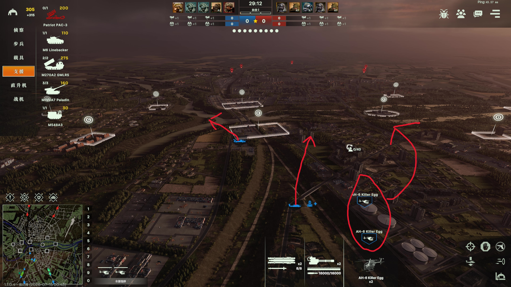
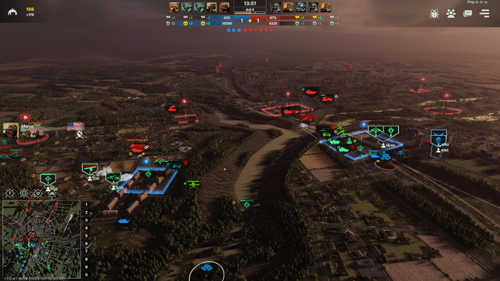

MAP DEMONSTRATION 02
マップ：イェルガヴァ
本ページでは、イェルガヴァでの市街戦を振り返ります。米軍の機甲旅団・特殊部隊・航空戦力を組み合わせ、味方と連携してロシア軍の大規模な機甲部隊に対処した流れをまとめています。

01
FORCE COMPOSITION
デッキ選択
この戦闘では、機甲旅団＋特殊部隊のデッキを使用。多数のヘリコプターで低空の火力網を構築し、地上主力が展開するまでの時間を稼ぎます。敵車両が接近した場合も、精鋭の特殊部隊が足止めを担えます。
機動力と地上戦力の厚みを両立させた、精鋭部隊中心の編成です。

02
AIR MOBILITY
迅速展開
多数のヘリコプターに待ち伏せ、防空、兵員輸送を分担させ、高地と有利な建物をいち早く確保して最初の防衛線を築きます。
先行部隊は主力到着まで厳しい持久戦を強いられます。後続の兵員輸送車に搭載された補給物資を活用し、弾薬補充と治療を行います。
Silent Hawk（サイレントホーク）はステルス性を活かし、敵防空網に捕捉されるリスクを抑えながら行動できます。
03
AIR-GROUND TEAM
地空連携
味方の防衛線が突破された地点へ増援を送り、側面の安全を確保します。
M1A2 SEP v3 が正面で敵の砲火を受け止め、RAH-66 Comanche（コマンチ）がトップアタックミサイルで敵車両を素早く排除します。
コマンチは高度を下げ、ステルス性を活かして敵防空部隊から反撃されるリスクを抑えます。一方で、地上火力から集中攻撃を受ける危険は高まります。

04
JOINT ASSAULT
大規模共同攻勢
敵ロシア軍の親衛戦車旅団が強力な車両部隊で圧力をかけてきたため、味方主力と連携して共同攻勢を仕掛けます。
長距離火力支援は味方を巻き込む可能性があるため、着弾地点を慎重に選びます。
PvEでは難易度調整により、親衛戦車旅団が多数の車両を展開した後も強力な航空戦力を投入してきます。特殊部隊の F-22 Raptor で牽制しつつ、地上防空部隊は対レーダーミサイルと航空爆撃を警戒します。
OPERATION TABLE
イェルガヴァ：作戦要点
| 段階 | 主な目標 | 主な戦力 | 注意点 |
|---|---|---|---|
| 編成 | 機動力と地上戦力を両立 | 機甲旅団、特殊部隊、ヘリコプター | 輸送・防空・火力支援の役割を分担 |
| 初動 | 高地と有利な建物を先に確保 | ヘリコプター、歩兵、兵員輸送車 | 先行部隊への補給を途切れさせない |
| 戦線支援 | 突破口を塞ぎ側面を守る | M1A2 SEP v3、RAH-66 Comanche | 低空飛行時の地上火力に注意 |
| 共同攻勢 | 味方主力と敵機甲部隊を押し返す | F-22、地上防空、長距離火力 | 誤射と対レーダーミサイルを警戒 |